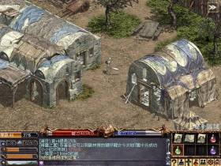

| 2001年12月27日
|
| 韓國測試伺服器更新 今天韓國測試伺服器有數百個檔案更新，不過大部分的檔案都和先前更新的相同，而用戶端版本則更新為11226，在這個版本中取消了/duel的新指令。
|
| 2001年12月25日
|
| 韓國測試伺服器更新了Lin.bin
韓國測試伺服器更新了Lin.bin這個檔案，版本為11224。
|
| 2001年12月24日
|
| 聖誕節禮物
在今天約0:00前所有的紅襪子都變成了聖誕節禮物，而目前本網得知有的禮物如下：紅水(5)，燈水(5)，白水(5)，藍水(5)，復活卷軸(5)，變杖(5)，白武卷(1)，祝武卷(1)．．． 暫時知道等級在41以上，正義值全滿（32767），PK值0的情況下將會得到祝武卷為聖誕禮物，另外其他的結果如下： 等級5，正義值-1000，PK值0：沒有
等級5，正義值1，PK值0：紅水(5)
等級5，正義值8，PK值0：紅水(5)
等級6，正義值678，PK值0：燈水(5)
等級6，正義值32767，PK值0：楓木魔杖(5)
等級12，正義值2003，PK值0：燈水(5)
等級16，正義值13167，PK值0：白水(5)
等級17，正義值7401，PK值0：白水(5)
等級23，正義值10130，PK值0：白水(5)?
等級24，正義值32767，PK值0：楓木魔杖(5)
等級25，正義值29306，PK值2：創杖(5)
等級32，正義值32767，PK值0：白武卷(1)
等級34，正義值32767，PK值0：白武卷(1)
等級35，正義值32767，PK值0：白武卷(1)
等級37，正義值32767，PK值0：楓木魔杖(5)
等級38，正義值32767，PK值0：祝防卷(1)
等級39，正義值32767，PK值0：白武卷(1)
等級40，正義值32767，PK值0：白武卷(1)
等級41，正義值32767，PK值0：祝武卷(1)
等級43，正義值32767，PK值0：祝武卷(1)
等級45，正義值32767，PK值0：祝武卷(1)
等級46，正義值32767，PK值0：祝武卷(1)
等級48，正義值32767，PK值0：祝武卷(1)
等級48，正義值32767，PK值6：藍水(5)
等級49，正義值32767，PK值0：祝武卷(1)
PS:多謝各位熱心人仕提供資料，假如閣下可以提供其他結果，歡迎電郵往info@hklineage.com或在遊戲中寫信給Lineage，謝謝！
|
| 2001年12月20日
|
| 新版圖一些抓圖（按圖放大）



獨家消息 - 新版圖Lair
of Valakas雷達地圖
剛剛韓國測試伺服器又更新了檔案，其中更包括了Lair
of Valakas（火龍乏拉卡斯的巢穴）的雷達地圖！在這版圖中有Iron
Gate Guild（鐵門公會，即是侏儒城）的城堡及Werldern Town，而其他檔案本網正在研究中，稍後再來將會放上（現知有聖誕節圖案的信紙）。
香港伺服器更新了
今天香港伺服器無聲無息地更新了，以下是本網暫時察覺到的更新：
1. 瑪那魔杖新增了-3攻擊成功的額外效果
2. 在村落倉庫旁新增了聖誕樹
3. 遊戲用戶端版本更新為11217（2001年12月17日的版本）
4. 在list.spr遊戲物件控制檔中，新增了所有早前韓國測試伺服器所有新增的Episode
10的怪物（包括火龍Valakas）。
|
| 2001年12月19日
|
| 韓國測試伺服器更新了火龍！
韓國測試伺服器再度有更新檔案，其中更包括了火龍Valakas！現在要等Nue兄釋出有關的圖
^^
台灣伺服器更新資料 台灣伺服器今天更新了，和香港伺服器目前的版本一樣，以下是其內容，轉載自台灣天堂官方網站：
1.召喚怪物HP變成0時,不會在地面留下屍體..會從地圖上消失.(類似傳送般有一道光)
2.在旅館的房間或走廊上無法將道具拋置於地上,負重過重依然可在旅館中回復MP與HP.避免玩家因道具放置旅館而損失.
3.刪除角色的時候,會出現提醒視窗倒數時間告知玩家欲刪除的角色名,防止玩家誤砍角色
4.角色移動時候按ESC便會停止前進.
5.為了NPC伺服器的穩定性,稍作修正.
6.配合聖誕節相關活動進行調整.
7.修正沙漠巨蟻洞蟻后NPC問題.
8.瑪那魔杖對於怪物最大吸取MP總值為40.
9.寵物選項的指定攻擊更改為無法設定怪物目標.
10.50級妖精角色之指定傳送功能暫時取消.
|
| 2001年12月18日
|
| 香港伺服器出現巨蟻女皇
雖然GM說巨蟻女皇還沒有開放，但今天已經有玩家在蟻洞發現了其蹤跡並將其殺死，見下圖（按圖放大）：
韓國測試伺服器大量檔案更新
今天韓國測試伺服器有大約二百餘個檔案更新，合共約22MB，部分可能是火龍的圖檔。
|
| 2001年12月17日
|
| 韓國測試伺服器聖誕音樂更新
韓國測試伺服器更新了11217版本的用戶端，新增了聖誕節的背景音樂。
香港天堂小更新
今天香港天堂伺服器更新了7個檔案，雖然在遊戲中GM說並沒有更新，但經本網研究檔案後結論如下：
Lin.bin - 遊戲用戶端11128版本，加入了十秒刪除角色的警告
map\36\7fff8000.s32 - 龍洞7/F的地圖
map\7\80007fff.s32 - 地監1/F的地圖
Surf\699.img及Surf\700.img - 歌唱之島及隱藏之谷的雷達地圖
text\list.spr - 遊戲物件描述及控制的檔案，最新的有Lord
British，Lava Golem，Magic Mark，Dwarf Master及Fire Warrior
text\string-c.tbl -
遊戲對話串的檔案，加入了十秒刪除角色的警告的對話串
|
| 2001年12月16日
|
| 新NPC、魔法和洞穴的圖片
早前本網提及的新NPC，魔法和洞穴，Nue's
Lineage釋出了有關的圖，以下是有關資料：
新敵人： 鳳凰(Phoenix) 伊弗列特(Ifrit)
 火武士(Fire Warrior) 火武士(Fire Warrior)
高倫熔岩人(Lava Golem)
火焰弓箭手(Fire Bowman) 亞塔吉歐(Astagio)
蜻蜓(Dragon Fly)  炸彈花(Bomb Flower) 炸彈花(Bomb Flower)
 火蛋(Fire Egg) 火蛋(Fire Egg)
新NPC： Lord
British 侏儒王(Dwarf King) 侏儒總管(Dwarf Master)
侏儒鐵匠(Dwarf Smith) 侏儒鐵匠(Dwarf Smith)
拿著物品的侏儒(Dwarf Burden) 侏儒警衛(Dwarf Guard)
聖誕妖魔(Orc Santa) 聖誕樹(Christmas tree) 新魔法：  冰箭(Ice Dagger) 冰箭(Ice Dagger)
風刃(Wind Cutter) 突刺術(Stalac) 火之護罩(Fire Shield) 水之護罩(Water Shield) 地之護罩(Earth Shield) 空之護罩(Air Shield) 冰雲(Frozen Cloud) 土牢(Earth Jail) 地震術(Earthquake) 冰錐箭(Coneofcold) 烈陽術(Sunburst) 光裂之矛(Disintegrate Spear) 火風暴(Firestorm) 新洞穴： 
|
| 2001年12月15日
|
| 韓國測試伺服器小更新
韓國測試伺服器又更新了Lin.bin這個檔案，修正了上一版本經常出現"Can't
load music file"的錯誤。
|
| 2001年12月14日
|
| 香港水之都大更新！
今天香港天堂伺服器終於更新了水之都，有關詳情可以參考官方網站的報導，而以下是大部分玩家關心的要點：
1. 防卷和武卷並沒有加價
2. 綠水減價了，NPC賣綠水的價錢為500金幣，而NPC收綠水的價錢為250金幣
3.
玩家不可以帶任何寵物落水底，而在水底亦不能使用召喚術
4. 水底沒有不怕物理攻擊的希爾黛斯
5. 在燃柳村外打高妖要PK（一個人打，沒有人幫）才有圖騰
另外在今天晚上8時至10時官方舉辦了放水大行動，所有新增的怪物都有一定的機率掉特別的寶物，如高品質鑽石，高品質藍寶石，對盔甲施法的卷軸等．．．
|
| 2001年12月13日
|
| 韓國測試伺服器小更新
韓國測試伺服器今天更新了Lin.bin這個檔案，應該是修正了上一版本經常當機(unable
to handle...)的錯誤。
另外今天在11:30am香港測試伺服器終於結束，雖然當時只有7名玩家上線，但在最後一分鐘GM仍然非常感然各位玩家的支持。
測試伺服器最後一刻：
|
| 2001年12月12日
|
| 將會更新的東西
本網研究了昨天韓國測試伺服的檔案，在不久的將來應該會有以下更新：
NPC: （有不少是侏儒類的新NPC）
Magic Mark
Dwarf King
Dwarf Master
Fire Warrior
Ifrit
Horn Cerverus
Dwarf Smith
Phoenix
bomb flower
fire bowman
orc santa
dwarf burden
dwarf guard
astagio
dragon fly
dwarf Fan
dwarf Oven
dwarf Vol
新魔法：（大部分都是四大屬性）
ice dagger shotting
ice dagger bomb
windcutter shotting
windcutter bomb
stalac
frozen cloud
earthjail
coneofcold circle
coneofcold shotting
sunburst
earthquake
disintegrate spear
firestorm
fire egg
fire shield
water shield
earth shield
air shield
另外下以是新洞穴的地圖效果：
cold firebomb
hot firebomb
lava wall
nor firebomb
cold lava
hot lava
hot big
hot small bubble
nor lava
nor big bubble one
nor small bubble
dwarf gate eye
brazier fire
sprite stone
fire dark one
fire light one
gas type one
spark one low
steam
trap
witch
gas area
lava cascade
lava flow
cliff lava
volcano addon
|
| 2001年12月11日
|
| 韓國測試伺服器大量檔案更新
今天韓國測試侵服器有大量檔案更新，經本網研究後，已經可以肯定下一次更新的城堡為侏儒城，侏儒城的位置太約在奇岩城的上方，龍谷的右或右上方，而在侏儒城附近將會有火洞（或冰火洞），在洞內將會有很多陷阱和新的怪物，如火戰士，鳳凰，Ifrit（太空戰士中的火召喚獸），火弓手．．．
另外亦加入了新的魔法，新的怪物．．．有關資料本網仍在整理中，敬請留意。
|
| 2001年12月7日
|
| 韓國測試伺服器背景音樂大更新
前天韓國的測試伺服器進行了背景音樂大更新，新增了28首MP3格式的音樂，總共約36MB，在不同的場景和狀態下會播放不同的背景音樂，如果大家想更新的話可以將捷徑由"/hongkong"改為"/test"，在下載檔案後（下載需時）再改回"/hongkong"，之後便可以在香港伺服器上玩有新背景音樂的天堂，另外在離開時的畫面亦改變了做奇岩格鬥場場景，很有立體感，而且配合憂怨的背景音樂，真的有點感動！（尤是對於玩了幾年的老玩家．．．）
注：請緊記測試伺服器的檔案只作測試之用，極有可能會出現問題，所以本網強議建議大家在一部電腦中安裝兩個天堂版本，一個是香港官方的1.70C，而另一就是韓國測試伺服器更新版本。
|
| 2001年12月6日
|
| 香港測試伺服器開放
今天香港天堂開放了測試伺服器，在早前抽中了的玩家或者在遊戲中答對問題的玩家皆可以用自己的帳號和約一個前的遊戲資料，在測試伺服器中，怪物掉物品的機會明顯增加了，差不多每隻怪器都會掉高品藍或高品鑽，而大約20隻普通怪物如鼠人便會掉武卷。 而在第一天的晚上九時十分，攻城時間開始了，當時練上大約有100人，而攻海音城的有特羅斯及夢夢軍團，在水城中GM特意創造了大量城堡弓箭手(50+)在城門旁，使玩家更難破到城門，但最後經玩家的努力終於破了城門，更將GM所創的城堡弓箭手殺掉，不消幾分鐘後便破了守護塔，最後由特羅斯取得海音城。
|
| 2001年12月1日
|
| 精靈女皇在燃柳村大屠殺
今天大約在2:00am，有人將精靈女皇引至燃柳村，然後精靈女皇便對非妖精玩家進行攻擊，其攻擊力可以與村落守衛相比，加上有玩家將精靈女皇加速及復活，因此有不少玩家因失了經驗值或道具，到最終精靈女皇終於安息了，而其後精靈女皇便一直沒有在妖精森林出現。
PS: 鳴謝宇多田光提供資料！

香港伺服器取得天堂1.70光碟的方法
詳情請參考官方的報導﹕
http://www.lineage.com.hk/lineage/events/cd_announcement/preview.htm
PS: 今天網主將會由英國搭飛機往香港﹐等待時間 +
乘車時間 + 飛機時間 + 時差將會超過30小時﹐而且網主在家的電腦已經壞了﹐故此明天可能會暫更新。
|


{kind=link}
{kind=link}
{kind=link}
{kind=link}
{kind=link}
{kind=link}
{kind=link}
{kind=link}
{kind=link}
{kind=link}
{kind=link}
{kind=link}